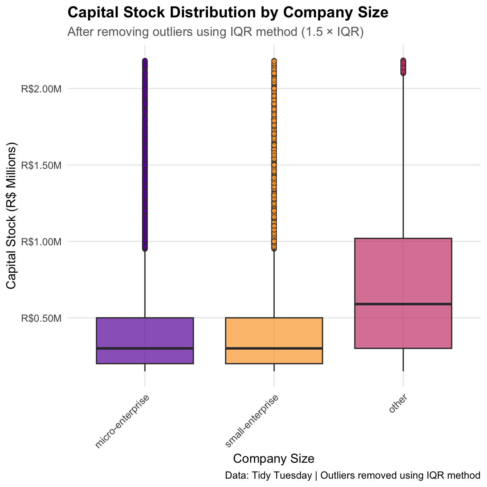
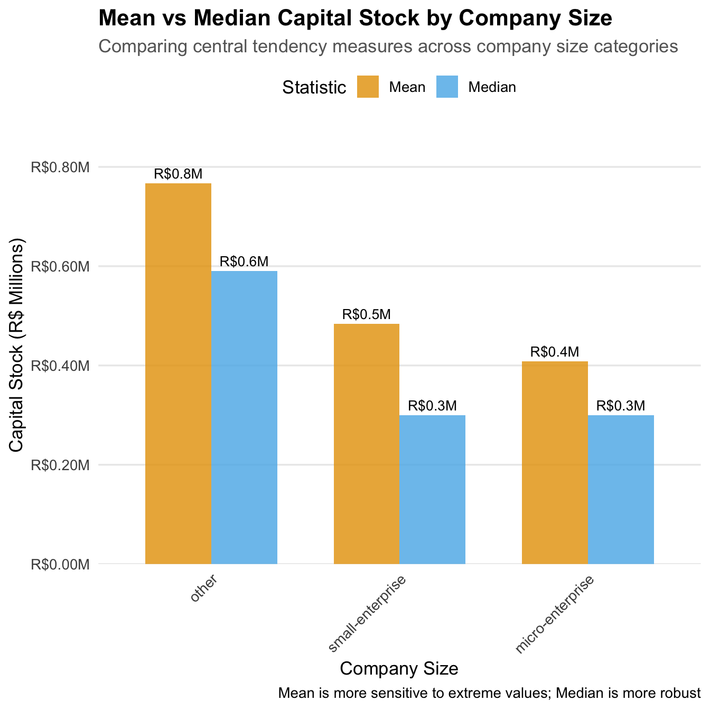

Homework 01
TidyTuesday Section
Explore the week’s TidyTuesday challenge. Develop a research question, then answer it through a short data story with effective visualization(s). Provide sufficient background for readers to grasp your narrative.
###This week’s Tidy Tuesday is on Brazilian companies and their financial details. Particularly, I am looking to see whether there is a relationship between headcount and capitalization.
##I hypothesize that the higher the headcount of a company, the higher their capital stock will be.
Load Libraries!
Load the data from GitHub
Code
companies <- readr::read_csv('https://raw.githubusercontent.com/rfordatascience/tidytuesday/main/data/2026/2026-01-27/companies.csv')
legal_nature <- readr::read_csv('https://raw.githubusercontent.com/rfordatascience/tidytuesday/main/data/2026/2026-01-27/legal_nature.csv')
qualifications <- readr::read_csv('https://raw.githubusercontent.com/rfordatascience/tidytuesday/main/data/2026/2026-01-27/qualifications.csv')
size <- readr::read_csv('https://raw.githubusercontent.com/rfordatascience/tidytuesday/main/data/2026/2026-01-27/size.csv')Data Cleaning: Remove Outliers Using IQR Method
I used the IQR (Interquartile Range) method with a 1.5 × IQR threshold to identify and remove outliers from the capital_stock variable. This is a standard marker used to remove extreme outliers and standardize variables to analyze.
Code
# Calculate IQR boundaries
Q1 <- quantile(companies$capital_stock, 0.25, na.rm = TRUE)
Q3 <- quantile(companies$capital_stock, 0.75, na.rm = TRUE)
IQR_value <- Q3 - Q1
# Define outlier boundaries
lower_bound <- Q1 - 1.5 * IQR_value
upper_bound <- Q3 + 1.5 * IQR_value
# Count outliers
n_outliers <- sum(companies$capital_stock < lower_bound |
companies$capital_stock > upper_bound, na.rm = TRUE)
# Remove outliers
companies_clean <- companies %>%
filter(capital_stock >= lower_bound & capital_stock <= upper_bound)Summary Statistics by Company Size
I also wanted to get a glimpse of the averages and standard deviations before continuing on to making visualizations.
Code
# Calculate summary statistics
summary_stats <- companies_clean %>%
group_by(company_size) %>%
summarise(
n = n(),
mean_capital = mean(capital_stock, na.rm = TRUE),
median_capital = median(capital_stock, na.rm = TRUE),
sd_capital = sd(capital_stock, na.rm = TRUE),
min_capital = min(capital_stock, na.rm = TRUE),
max_capital = max(capital_stock, na.rm = TRUE)
) %>%
arrange(desc(median_capital))
print(summary_stats)# A tibble: 3 × 7
company_size n mean_capital median_capital sd_capital min_capital
<chr> <int> <dbl> <dbl> <dbl> <dbl>
1 other 28215 767249. 590000 541277. 150001
2 micro-enterprise 62911 408728. 300000 341694. 150000.
3 small-enterprise 29999 484254. 300000 394515. 150100
# ℹ 1 more variable: max_capital <dbl>Visualization 1: Box Plot by Company Size
Code
companies_clean %>%
ggplot(aes(x = reorder(company_size, capital_stock, FUN = median),
y = capital_stock,
fill = company_size)) +
geom_boxplot(alpha = 0.7, outlier.shape = 21, outlier.size = 2) +
scale_y_continuous(labels = dollar_format(prefix = "R$", scale = 1e-6, suffix = "M"),
breaks = seq(0, max(companies_clean$capital_stock), by = 500000)) +
scale_fill_viridis_d(option = "plasma", begin = 0.2, end = 0.8) +
labs(
title = "Capital Stock Distribution by Company Size",
subtitle = "After removing outliers using IQR method (1.5 × IQR)",
x = "Company Size",
y = "Capital Stock (R$ Millions)",
fill = "Company Size",
caption = "Data: Tidy Tuesday | Outliers removed using IQR method"
) +
theme_minimal(base_size = 13) +
theme(
plot.title = element_text(face = "bold", size = 16),
plot.subtitle = element_text(color = "gray40"),
axis.text.x = element_text(angle = 45, hjust = 1),
legend.position = "none",
panel.grid.minor = element_blank()
)
I think it’s interesting that micro and small caps are similarly capitalized, when adjusting for outliers. Clearly “other” which I interpret to be large caps in this case, have a much higher average capital stock and spread as well.
Visualization 2: Bar Chart with Mean and Median
Bar charts comparing both mean and median capital stock across company size categories to show central tendency.
Code
# Prepare data for plotting
summary_long <- summary_stats %>%
select(company_size, mean_capital, median_capital) %>%
pivot_longer(cols = c(mean_capital, median_capital),
names_to = "statistic",
values_to = "value") %>%
mutate(statistic = recode(statistic,
"mean_capital" = "Mean",
"median_capital" = "Median"))
# Create bar chart
ggplot(summary_long, aes(x = reorder(company_size, -value),
y = value,
fill = statistic)) +
geom_col(position = "dodge", alpha = 0.8, width = 0.7) +
geom_text(aes(label = paste0("R$", round(value/1e6, 1), "M")),
position = position_dodge(width = 0.7),
vjust = -0.5, size = 3.5) +
scale_y_continuous(labels = dollar_format(prefix = "R$", scale = 1e-6, suffix = "M"),
expand = expansion(mult = c(0, 0.15))) +
scale_fill_manual(values = c("Mean" = "#E69F00", "Median" = "#56B4E9")) +
labs(
title = "Mean vs Median Capital Stock by Company Size",
subtitle = "Comparing central tendency measures across company size categories",
x = "Company Size",
y = "Capital Stock (R$ Millions)",
fill = "Statistic",
caption = "Mean is more sensitive to extreme values; Median is more robust"
) +
theme_minimal(base_size = 13) +
theme(
plot.title = element_text(face = "bold", size = 16),
plot.subtitle = element_text(color = "gray40"),
axis.text.x = element_text(angle = 45, hjust = 1),
legend.position = "top",
panel.grid.minor = element_blank(),
panel.grid.major.x = element_blank()
)
This shows the mean and median of capital stock across company size, and it helps with robustness as well. It does show that the medians of small and micro enterprises are essentially the same, and thus that although the mean for small are higher, it has mainly to do with a few higher earners.
Summary:
In short, there is a relationship between company size and capital stock, but only between the lower two categories and “other”. In reality, other should be “large-enterprise” as that name more accurately reflects the companies it represents.